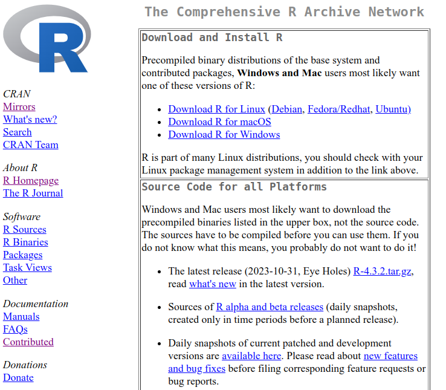
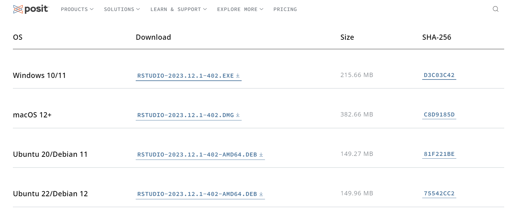
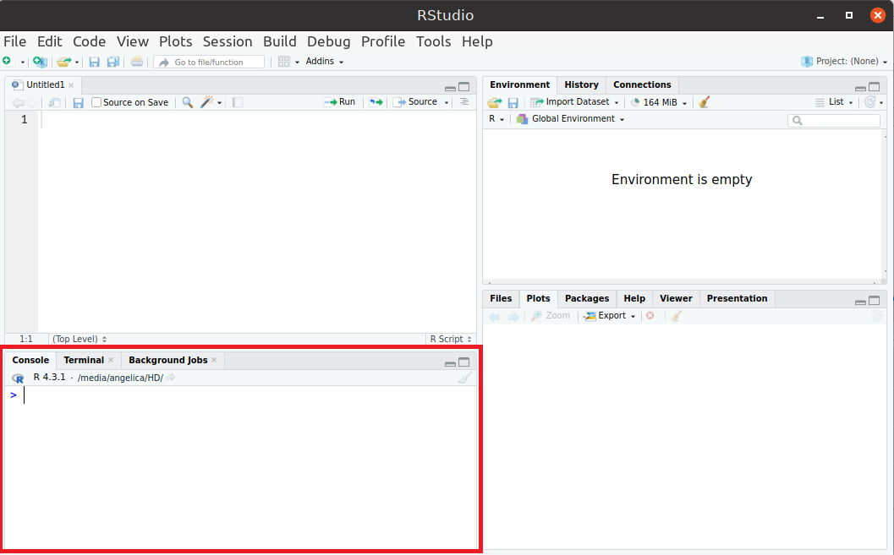
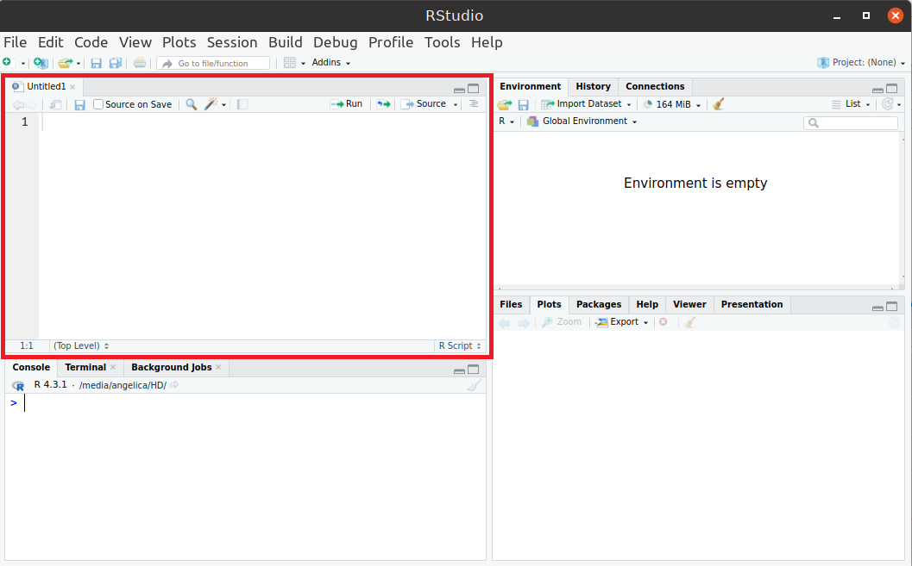
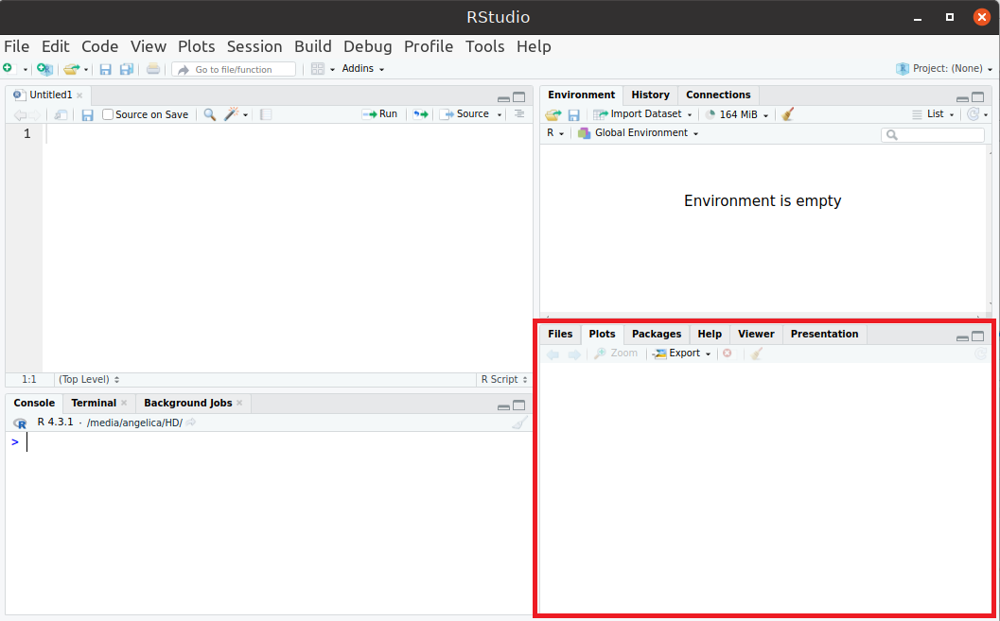
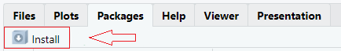
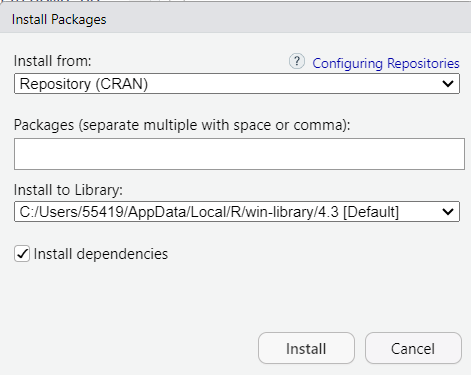

Capítulo 1 Introdução
1.1 Sobre o R e RStudio
- O R é uma linguagem de programação para análises estatísticas de dados
- É de código aberto, sendo gratuito e de livre distribuição;
- Amplamente utilizado por pesquisadores, professores e estudantes
- Disponível para diferentes sistemas operacionais;
- Conta com inumeros pacotes que disponibilizam funções e dados estatisticos
- Junto ao R, o RStudio é utilizado como ambiente de desenvolvimento integrado
1.2 Instalação do R e do RStudio
Disponivel para Windows, macOS e Linux a instalação do R é simples basta seguir o passo-a-passo:
- Visitar o site do R: https://cran.r-project.org/
- Clicar no link referente ao sistema operacional correspondente
- Fazer a instalação de acordo com as instruções

Após a instalação do R seguir o passo-a-passo para a instalação do Rstudio:
- Visitar a página do RStudio
- Fazer o download do arquivo referente ao sistema operacional correspondente
- Fazer a instalação de acordo com as instruções

1.3 Estrutura do RStudio
O Rstudio é dividido em quatro janelas principais:
1. Console (Janela Inferior Esquerda):
- Permite executar comandos R diretamente.
- Exibe resultados e mensagens (saídas de funções, erros, avisos).

📌 Dicas:
- Para rodar um código, digite e pressione Enter.
- Use as setas ↑ e ↓ para acessar comandos anteriores.
- O atalho Ctrl + L (Windows/Linux) ou Cmd + L (Mac) limpa o console.
Exemplo 1.3.1: Digite os códigos abaixo no Console. Use as setas ↑ e ↓ para acessar comandos anteriores. Limpe o console.
x <- 3 # pressione Enter
y <- 2 # pressione Enter
print(x) # pressione Enter
print(y) # pressione Enter2. Editor de Scripts (Janela Superior Esquerda):
- Editor de arquivos R (.R), RMarkdown (.Rmd), Shiny Apps, entre outros.
- Permite escrever e salvar códigos para execução posterior.

📌 Dicas:
- Ctrl + Enter → Executa a linha atual.
- Ctrl + Shift + Enter ou Ctrl + A e Ctrl + Enter → Executa o script inteiro.
- Ctrl + S → Salva o arquivo.
- Para criar um novo script: File → New File → R Script.
Exemplo 1.3.2: Digite os códigos abaixo no Editor de Scripts. Utilize Ctrl + Enter para compilar cada linha separadamente. Utilize Ctrl + Shift + Enter (ou Ctrl + A e Ctrl + Enter) para compilar todo o script. Salve o arquivo em algum repositório.
3. Ambiente e Histórico (Janela Superior Direita):
- Environment: Mostra objetos carregados na sessão (data frames, variáveis, funções).
- History: Lista de comandos executados no console.
- Connections: Permite conectar-se a bancos de dados.

📌 Dicas:
- Use
ls()no console para listar os objetos carregados. - Para limpar o ambiente:
rm(list = ls())
Exemplo 1.3.3: Consulte as abas Ambiente e Histórico. Visualize as variáveis criadas e funções utilizadas. Utilize rm(list = ls()) para limpar o ambiente.
4. Janela de Arquivos, Plots, Pacotes e Ajuda (Janela Inferior Direita):
- Files: Gerenciador de arquivos do diretório de trabalho.
- Plots: Exibe gráficos gerados pelo R.
- Packages: Lista pacotes instalados e permite carregar ou instalar novos.
- Help: Ajuda e documentação de funções do R.
- Viewer: Exibe documentos HTML, visualizações interativas (como Shiny).
- Presentation: Permite criar apresentações de slides (RMarkdown).

📌 Dicas:
- Instalar um pacote:
install.packages("nome_do_pacote")ou clicar no botãoInstallna aba Packages. - Carregar um pacote:
library("nome_do_pacote")ou “marcar” o pacote na aba Packages. - Visualizar ajuda de uma função (ou pacote):
?nome_da_funçãoouhelp(nome_da_função). - Listar pacotes carregados:
search()


Exemplo 1.3.4:
- Copie e cole o código
plot(1:10). Visualize o resultado na aba Plots. Exporte o gráfico. - Instale e carregue o pacote
ggplot2. Encontre a documentação do pacote no cran do R. - Consulte na aba help a documentação da função
mean(). Qual argumento permite ignorar valoresNAnos cálculos de média?
1.3 Exercícios da Sessão
1. No Console, execute os seguintes comandos e observe os resultados:
Qual foi o valor impresso no console? Use o comando ls() no console, o que ele faz?
2. No Editor de Scripts, crie um novo arquivo R: File → New File → R Script. Copie e cole o seguinte código no script:
# Criando um vetor
numeros <- c(1, 2, 3, 4, 5)
# Calculando a média
media <- mean(numeros)
# Mostrando o resultado
print(media)- Salve o script como meuscript.R
- Execute o script inteiro usando Ctrl + A e Ctrl + Enter.
- O que foi impresso no console?
3. No Editor de Scripts cole este código e execute:
- Vá até a aba Plots e veja o gráfico gerado.
- Clique em
Exportpara salvar o gráfico.
4. Na aba Packages, instale e carregue o pacote de manipulação de dados dplyr. Encontre a documentação do pacote no Cran do R.
5. No Console do RStudio, consulte a documentação das seguintes funções:
- Descreva resumidamente o que faz cada função.
- Anote os principais argumentos de cada função.
1.4 Operações Básicas em R
1.4.1 Operações Aritméticas
R funciona como uma calculadora, permitindo operações básicas com números e variáveis.
Exemplo 1.4.1 (a):
# Soma
2 + 3 # Resultado: 5
# Subtração
10 - 4 # Resultado: 6
# Multiplicação
5 * 2 # Resultado: 10
# Divisão
9 / 3 # Resultado: 3
# Exponenciação
2^3 # Resultado: 8
# Raiz quadrada
sqrt(16) # Resultado: 4
# Resto da divisão (módulo)
10 %% 3 # Resultado: 1
# Parte inteira da divisão
10 %/% 3 # Resultado: 3Ordem de Prioridade dos Operadores Aritméticos
- Parênteses
()– maior prioridade - Exponenciação
^ - Multiplicação e Divisão
*,/ - Soma e Subtração
+,-
Exemplo 1.4.1 (b):
1.4.2 Criando Variáveis (objetos)
1.4.2.1 Sequências
Usar \(a:b\) cria uma sequência de a a b, ou seja, \(a, a+1, a+2, ..., b\)
## Criando uma sequencia de 1 a 6
1:6
## Criando uma sequencia de 5 a 10
5:10
## Criando uma sequencia decrescente de 10 a 1
10:1Também podemos usar a função seq() para criar sequências:
seq(from = 1, to = 10, by = 2)
# gera sequencias de numeros
# from: valor inicial, to: valor final,
# by (opcional): Incremento,
# length.out (opcional): Número total de elementos
## Criando uma sequencia de 1 a 6
seq(from = 1, to = 6, by = 1) #equivalente a 1:6
## Criando uma sequencia de 5 a 10
seq(5, 10, by = 1) #equivalente a 5:10
## Criando uma sequencia de 1 a 10, com passo 2
seq(1, 10, by = 2)
## Criando uma sequencia de 1 a 10, com 5 elementos
seq(1, 10, length.out = 5) 1.4.2.3 Atribuições de valores
Para criar uma variável ou objeto, usamos o simbolo de atribuição <-.
Exemplo 1.4.2:
## Atribuindo um número a um objeto
x <- 5
y <- 3
## Operações entre objetos numéricos:
x+y # soma
x-y # subtração
x*y # produto
x/y # quociente📌 Restrições nos nomes das variáveis (objetos)
1. Começo do Nome: Não pode começar com número ou caracteres especiais. Deve começar com uma letra (A-Z ou a-z).
nome_valido <- 5 # Correto
1nome_invalido <- 15 # Erro: nome não pode começar com número
@nome_invalido <- 15 # Erro: nome não pode começar com caracteres especiais2. Espaços e Caracteres: O nome não deve conter espaços nem caracteres especiais como @, #, -, $, etc. O underline (_) é um caractere permitido no meio do nome.
variavel_valida_1 <- 20 # Correto
variavel#invalida <- 40 # Erro: caractere inválido (#)
variavel@invalida <- 40 # Erro: caractere inválido (@)3. Diferenciação de Maiúsculas e Minúsculas: O R diferencia maiúsculas de minúsculas. Assim, var, Var e VAR são considerados nomes diferentes.
4. Palavras Reservadas: Não é permitido usar palavras reservadas do R (como if, else, for, TRUE, FALSE, etc.). Essas palavras têm significados específicos e não podem ser sobrescritas.
5. Pontos e Nomes de funções preexistentes: Não é recomendado utilizar pontos. Também evitar usar nomes que conflitem com funções preexistentes do R.
📌 Dicas para os nomes das variáveis (objetos)
- A convenção em R é usar underline (_) para nomes de objetos (exceto no inicio).
- Evitar nomes ambíguos e usar nomes descritivos que deixem claro o que o objeto representa.
1.4.1 Exercícios
1. Realize as seguintes operações no R:
- Soma de 45 e 23.
- Subtração de 78 por 35.
- Multiplicação de 12 e 9.
- Divisão de 100 por 4.
- Calcule 5 elevado à potência 3.
- Calcule a raiz quadrada de 64.
2. Atribua os valores 10 e 5 a duas variáveis chamadas a e b, respectivamente. Em seguida, calcule:
- A soma de
aeb. - O produto de
aeb. - A diferença entre
aeb. - O quociente de
adividido porb.
3. Algumas regras devem ser seguidas ao nomear variáveis em R. Analise os seguintes nomes e indique quais são válidos e quais causarão erro. Justifique a sua resposta.
1.4.3 Operações Lógicas e Comparações
Os operadores lógicos em R são usados para avaliar expressões booleanas (VERDADEIRO ou FALSO) e criar condições. Eles operam em vetores, valores lógicos (TRUE, FALSE) e numéricos e são muito usados em estruturas condicionais e filtros de dados.
1. Operadores de Comparação
Estes operadores retornam TRUE ou FALSE, dependendo do resultado da comparação.
| Operador | Descrição | Exemplo | Resultado |
|---|---|---|---|
== |
Igualdade | 10 == 10 |
TRUE |
!= |
Diferente | 10 != 5 |
TRUE |
> |
Maior que | 10 > 5 |
TRUE |
< |
Menor que | 10 < 5 |
FALSE |
>= |
Maior ou igual | 10 >= 10 |
TRUE |
<= |
Menor ou igual | 10 <= 5 |
FALSE |
Obs.: Para consultar o help destas funções usar ?Comparison ou help("operador"), para algum operador específico.
2. Operadores Lógicos
| Operador | Descrição | Exemplo | Resultado |
|---|---|---|---|
! |
Negação lógica | !TRUE |
FALSE |
& |
E lógico | (TRUE & FALSE) |
FALSE |
| |
OU lógico | (TRUE | FALSE) |
TRUE |
&& |
E lógico | (TRUE && FALSE) |
FALSE |
|| |
OU lógico | (TRUE || FALSE) |
TRUE |
Obs.: Para consultar o help destas funções usar ?Logic ou help("operador"), para algum operador específico.
Diferença entre & e &&, | e ||
- As formas mais curtas (
&e|) realizam comparações elemento a elemento. - As formas mais longas (
&&e||) avaliam da esquerda para a direita, prosseguindo apenas até que o resultado seja determinado (em geral, mais eficiente computacionalmente).
Exemplo 1.4.3:
## Operadores de Comparação
5 > 3
5 != 3
## Operadores Lógicos
TRUE & TRUE # ambos são verdadeiros? Sim -> TRUE, Não -> FALSE
TRUE | FALSE # pelo menos um deles é verdadeiro? Sim -> TRUE, Não -> FALSE
## Operadores de Comparação e Lógicos
(5>3) & (4>6) # FALSE
(2<3) | (4<6) # TRUE
## Comparando & e &&
print(1) & print(2) & FALSE & print(3) & print(4) # printa todos os elementos
print(1) && print(2) && FALSE && print(3) && print(4) # para a execução quando encontra o FALSE3. Operador de Pertinência (%in%)
Retorna um vetor lógico indicando se há uma correspondência ou não para seu operando esquerdo.
x <- c(1, 2, 3, 4, 5)
2 %in% x # TRUE (2 está no vetor)
10 %in% x # FALSE (10 não está no vetor)
y <- c(2,3)
x %in% y # FALSE TRUE TRUE FALSE FALSE
# Identifica quais elementos de x também pertencem a y.
# Terá a dimensão de x
y %in% x # TRUE TRUE
# Identifica quais elementos de y também pertencem a x.
# Terá a dimensão de y1.4.4 Funções Básicas
Conceitos teóricos
Nos conceitos básicos a seguir, vamos considerar \(x_1, x_2, \dots, x_n\), um conjunto de valores.
Soma
A soma de um conjunto de valores é a adição de todos os elementos do conjunto. Assim, soma é definida como:
\[ S = \sum_{i=1}^{n} x_i \]
Mínimo e Máximo
O mínimo de um conjunto de valores é o menor elemento presente no conjunto, enquanto o máximo é o maior elemento. Assim,
- Mínimo: \(\min(X) = \min \{ x_1, x_2, \dots, x_n \}\)
- Máximo: \(\max(X) = \max \{ x_1, x_2, \dots, x_n \}\)
Média
A média aritmética é a soma de todos os valores dividida pelo número total de elementos no conjunto. Desta forma, a média é dada por:
\[ \bar{x} = \frac{1}{n} \sum_{i=1}^{n} x_i \]
Ordenação
Ordenar: organizar um conjunto de valores em ordem crescente ou decrescente. Para o conjunto \(x_1, x_2, \dots, x_n\), denotamos os valores ordenados (crescente), por \(x_{(1)}, x_{(2)}, \dots, x_{(n)}\).
Mediana
A mediana é o valor que separa a metade inferior e a metade superior de um conjunto ordenado. Se o número de elementos \(n\) for ímpar, a mediana é o valor central. Se \(n\) for par, a mediana é a média dos dois valores centrais:
- Se \(n\) ímpar: \(\tilde{x} = x_{(\frac{n+1}{2})}\)
- Se \(n\) par: \(\tilde{x} = \frac{x_{(n/2)} + x_{(n/2 + 1)}}{2}\)
Funções básicas no R:
variavel <- c(-20, -10, 40, 30, -10, 50, 30) # Vetor de números
## Funções Estatísticas e Matemáticas
length(variavel) # Número de elementos -> 7
sum(variavel) # Soma -> 110
min(variavel) # Mínimo -> -20
max(variavel) # Máximo -> 50
abs(variavel) # Valor absoluto -> 20 10 40 30 10 50 30
mean(variavel) # Média -> 15.71
median(variavel) # Mediana -> 30
sd(variavel) # Desvio padrão -> 28.19
var(variavel) # Variância -> 795.2381
summary(variavel) # Resumo de estatísticas básicas
sample(variavel, size = 2, replace = F)
# seleciona uma amostra aleatória de size=2, sem reposição
## Outras funções
sort(variavel) # Ordena os elementos do vetor
rev(variavel) # Inverte a ordem dos elementos
unique(variavel)
# Retorna valores únicos (sem elementos duplicados) de um vetor1.4.2 Exercícios
1. Crie os vetores a seguir e utilize os operadores lógicos & e | para verificar as condições elementares entre eles.
Vetores:
x <- c(TRUE, FALSE, TRUE, FALSE)
y <- c(FALSE, FALSE, TRUE, TRUE)
O que o operador & retorna? E o |?
2. Considere os seguintes números: a <- 7, b <- 3. No R, verifique as condições:
- Se
aé maior queb - Se
aé divisível por 2 - Se
aé maior quebE (lógico) seaé divisível por 2, usando o operador lógico&&
3. Crie um vetor z <- c(2, 5, 3, 7, 1) e utilize os operadores de comparação para verificar:
- Se os valores de z são maiores que 3.
- Se os valores de z são menores ou iguais a 5.
- Se os valores de z são diferentes de 7.
4. Crie um vetor a <- c(1, 2, 3, 4, 5) e verifique se os valores 3 e 6 estão presentes nele usando o operador de pertinência %in%. O que o operador %in% retorna?
5. Considere o vetor: b <- c(80,10,3,1,-5,1,-18,3). Usando as funções básicas do R:
- Ordene os valores do vetor em ordem crescente
- Encontre o seu vetor de valores absolutos
- Encontre os valores únicos (sem elementos duplicados) do vetor
6. Crie um vetor v <- c(7, 2, 9, 5, 3, 6) e calcule o desvio padrão e a média desse vetor utilizando as funções sd() e mean().
7. Use a função summary() para obter um resumo estatístico do vetor v_2 <- c(7, 2, 9, 5, 3, 6).